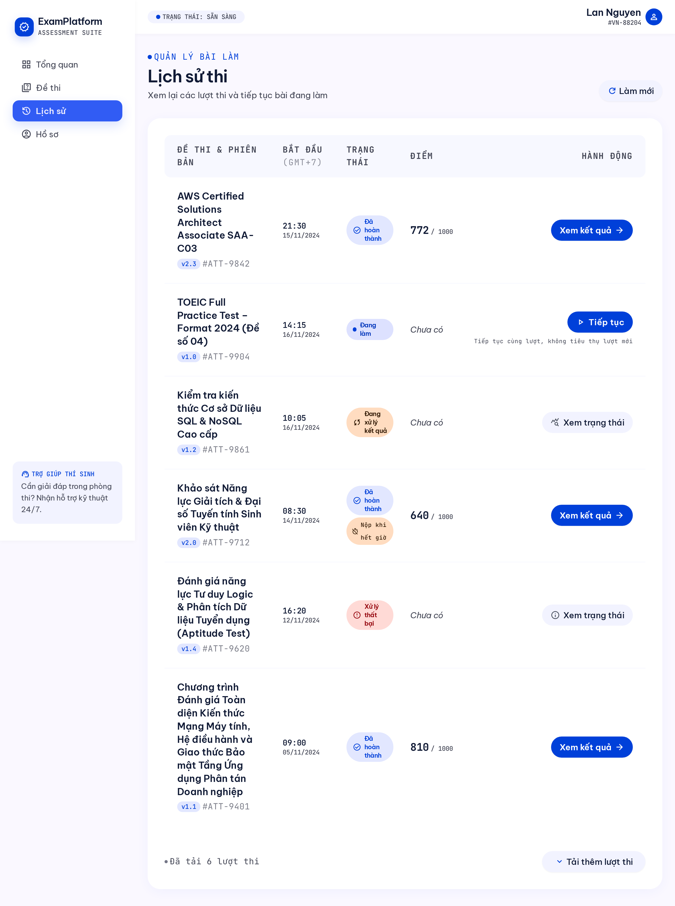
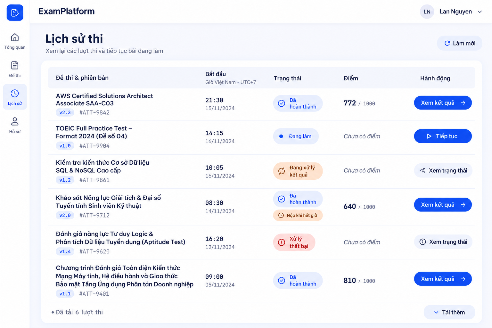
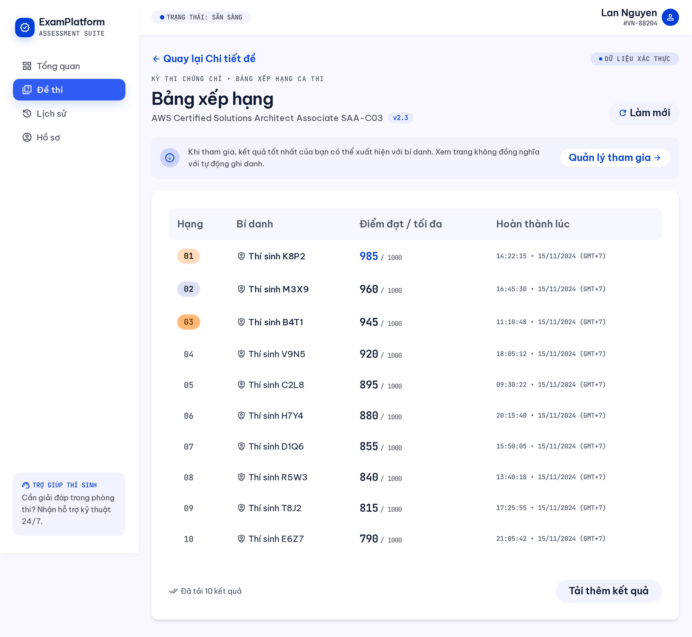
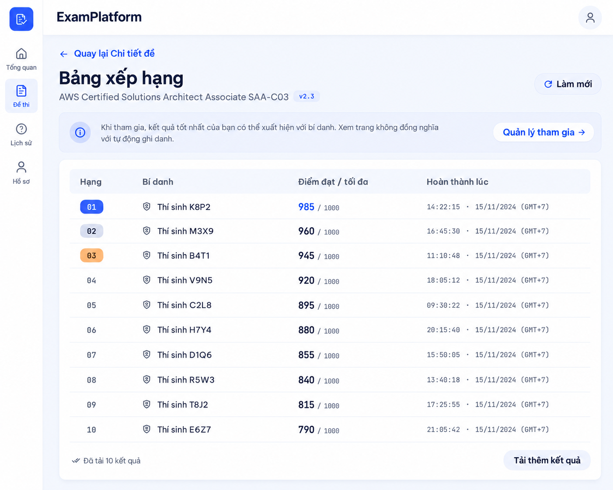
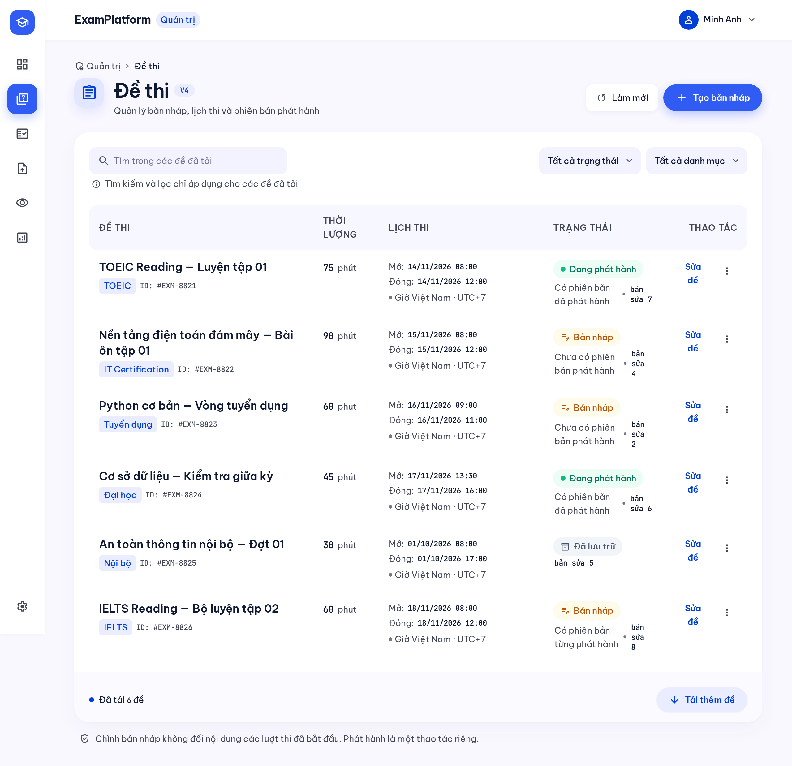
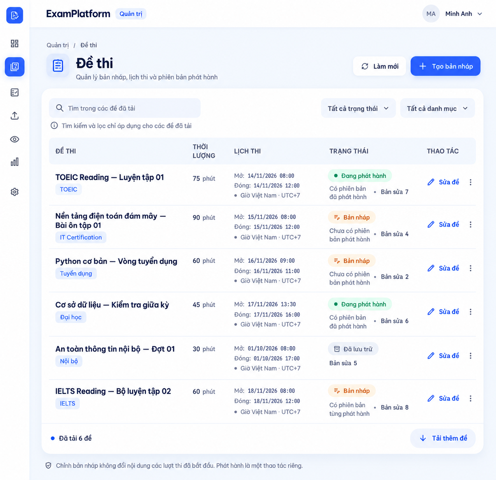

Giữ phong cách Cobalt–Apricot và dữ liệu mẫu gốc. Người dùng đã tạm chốt cả ba bản điều chỉnh làm main visual reference desktop Loaded; có thể sửa thêm sau. Chưa port ứng dụng. Bấm ảnh để mở PNG đầy đủ. Bố cục responsive của trang gallery không phải mobile design của sản phẩm.


Mô tả chức năng/style · Prompt nguyên văn (1351 từ) · Nguồn và metadata


Mô tả chức năng/style · Prompt nguyên văn (1299 từ) · Nguồn và metadata


Mô tả chức năng/style · Prompt nguyên văn (1322 từ) · Nguồn và metadata